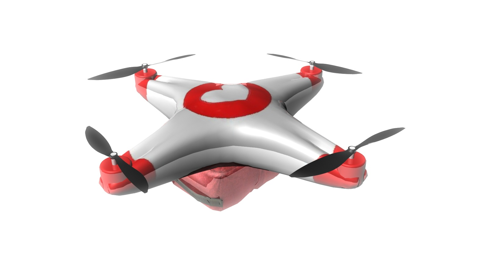
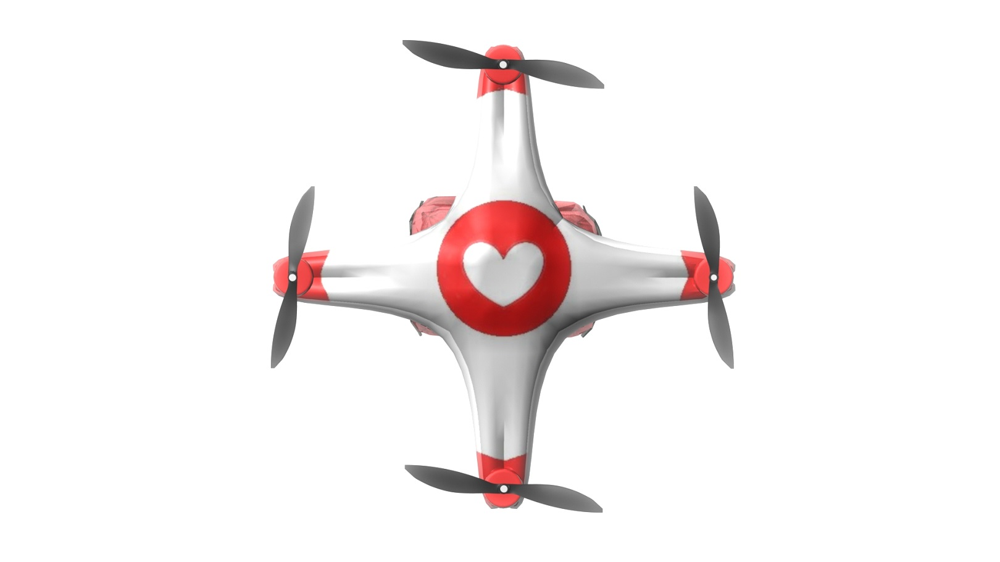
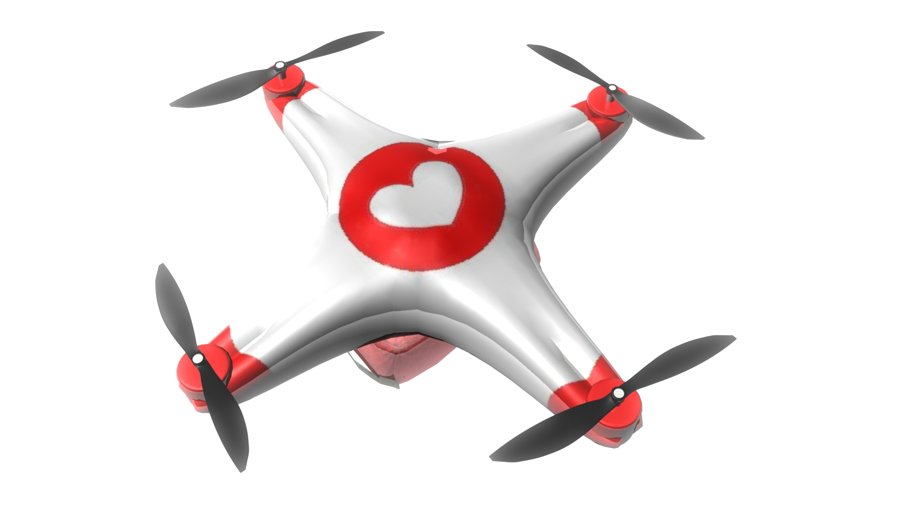
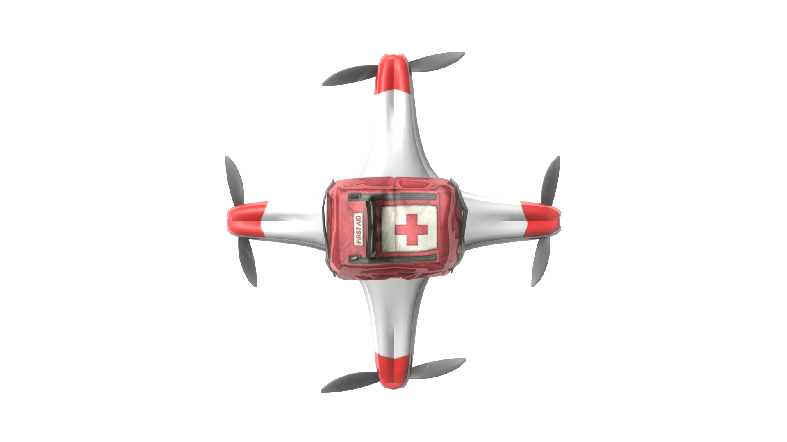
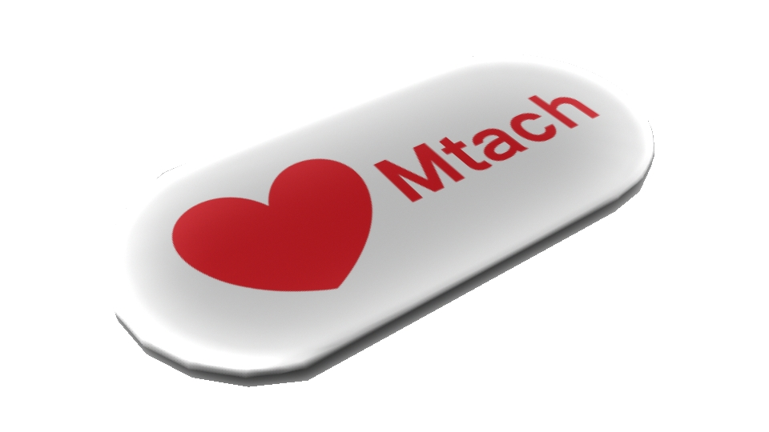

Rohan Deshpande
To invent, you need a good imagination
and a pile of junk. -Thomas A. Edison
iMrs
Immediate Medical Response System
Abstract:
According to the World Health Organization (WHO), the top two causes of death in the world are ischaemic heart disease (IHD) and stroke, both of which require immediate medical attention. This translates to over 13 million deaths worldwide , many of which could be saved by quick medical attention.
Our technology, the Immediate Medical Response, iMr, is a 3-part system: a Mtach bio-sensor that can detect an emergency; a GPMS positioning and monitoring system that locates emergencies; and a Mrotor mini Unmanned Aviation Vehicle (UAV) that responds to the emergency alerts and acts as a first responder system that will deliver elementary, life-saving treatment. iMr will cut the time it takes for medical attention to reach the patient, a critical issue in developing nations and, hence, save many lives. IMr is also cheap, comprehensive, and versatile making it attractive in developed countries to deliver fast emergency response at low cost.
Background
Cardiovascular diseases (CVDs) are diseases related to the circulatory system and the heart. IHD involves the clogging of the coronary arteries with plaque, which can result in a heart attack. Many CVDs require immediate medical assistance for survival; tragically, this is not a reality for many. Even with the major advances in medical attention today, from response to treatment, over 17 million lives are claimed by stroke, IHD, and CVD medical emergencies--- every year. Even more are being lost annually from other medical emergencies that lack prompt, appropriate medical attention. A better solution to save these lives is critically needed.
Present Technology: [Detection:] After an emergency occurs, usually another person who finds out calls Emergency Medical Services (EMS). Slow detection, however, results in severe damage to brain which occurs due to no blood flow, revealing the need for more effective and faster detection. [Before the hospital:] An Automated External Defibrillator (AED) checks heart pulse and sends an electrical shock to the heart through metal leads attached to the chest in order to restore regular heartbeat. Sudden cardiac arrest, often the result of irregular electric activity of the heart (heart arrhythmia), can be treated with an AED. Chest compressions, in conjunction with assisted respiration, are always performed for CVD emergencies to maintain blood circulation of nutrients and oxygen with cardiopulmonary respiration (CPR). AEDs and people trained in CPR, however, are not present in many locations, particularly in developing nations. Even when nearby, if immediate attention is not received in a few minutes, a patient will often die, as seen in sudden cardiac arrest. Whereas pacemakers and implantable defibrillators are recent technology that keeps contains heart arrhythmia with minor electric pulses, they’re limited to those (1) willing to restrict major life activities with implanted device and (2) able to pay for such an expensive surgery of over $20,000. In America alone, 130,000 of the 800,000 patients who have stroke, die. The worst damage from a stroke often occurs during the first few minutes after a stroke. Clearly a quick, omnipresent solution that is accessible to anyone, anywhere right when the emergency occurs is necessary. [To the hospital:] Land and helicopter “air” ambulances are current methods to respond to medical emergencies. Land ambulances, however, are susceptible to circuitous routes, traffic jams, and limited access to certain areas such as trails. The EMS response is worst in developing countries, which range from 2 hours and 42 minutes in West Azerbaijan, to 1 hour in Pakistan. Air ambulances, while flying to the patient directly, can only access areas with flat land for landing. Air ambulances also come with astronomical costs: the Essex Air Ambulance, for example, costs over $45,000 per trip. A cheaper, faster response mechanism which is accessible to any terrain or area is required. [At the hospital:] Once at the hospital, a patient with IHD is given a CT scan, as with other CVDs, to detect the location of blood blockages. Different procedures to clear the clog are performed. A metal mesh known as a stent is used to compress and hold the plaque to the sides of the arterial walls. Angioplasty, encompasses the use of a small balloon to compress the plaque all the way to using diamond-headed rotors to cut away hardened plaque. New coronary arteries are constructed if the blockage is too extensive and medications are often used for treatment as well, such as aspirin, an anti-clotting medicine, to improve blood flow. Other cardiovascular diseases involving vessel blockage may use similar anti-clotting medications as well, such as tissue plasminogen activator for stroke. These methods, while comprehensive and effective, are only available at the hospital. Before reaching the hospital, the body is susceptible to much harm. A way of bringing some of these procedures to the patient at the scene of the emergency is needed. [Future Outlook:] Clearly a cheap, quick-responding, comprehensive, omnipresent solution that is accessible to anyone, anywhere, is required to resolve the crisis posed by IHD, stroke, and other CVD medical emergencies. Such an innovation would save millions of lives that are stolen by ineffective medical responses.
|1. Mtach:| Mtach will be a small, versatile, external, portable biosensor that tracks the health of the user. [Monitoring function] The Mtach will detect aberrant behavior, which can be analyzed for impending medical emergencies through continuous monitoring of: 1) Blood pulse with the Cardiocam , developed at MIT, by detecting fluctuations in light absorbance by the blood corresponding to each blood pulse 1c. 2) Electrical heart activity with the Holter monitor by construction of an electrocardiogram2c. 3) Body temperature with an electronic thermometer3c. 4) Respiration rate with an electronic thermometer by detecting brief, small spikes in body temperature5c. 5) Fall detection and severity measured with accelerometers that track displacement angle and fall impact6c. Adhering to the body with painless, removable microneedle adhesion7c or strong, removable adhesive substance8c, the Mtach will be attached, like a band-aid, over the heart (on the chest). With an external body of durable and light carbon fibers, the Mtach will maximize comfort and be suitable for people with allergies. The Mtach will be powered by a 1 inch squared battery, developed by a Department of Energy research lab, which uses thermoelectric generator to convert body heat to electricity8.5c. This provides a sustainable, clean, and renewable power source.
|2. gpMs:| The Global Positioning and Medical System (gpMs) will be a secure online- based system to store, analyze, track, and respond to medical emergencies in conjunction with the Mtach using computers such as IBM’s Watson, an artificial intelligence computer. By using the global internet, the gpMs will have worldwide coverage. [Data Analysis & Storage Function] The Mtach will continuously send its data to the gpMs for analysis and storage through its internet module to the internet infrastructure and nearby regional routers. (1) The gpMs will continuously analyze incoming data for possible symptoms of IHD and common medical emergencies, such as rapid or irregular blood pulse and shallow breathing for IHD. (2) As a database, the gpMs will store Mtach data up to 15 days old, as well as all abnormal data points deviating from the preset norm. In the case of an emergency, this data will help a doctor decide on appropriate treatment methods for the condition. The Mtach will also include an optional feature of updating a smart phone app with current data through the Mtach Bluetooth module. History from the past 15 days, as well as all abnormal data, will be available, allowing the patient to monitor his or her own health for free. [Detection and Response Function] The gpMs will alert the patient, the patient’s doctor, and the EMS in the case of an emergency, and the patient’s emergency contacts. A loud alarm through the Mtach will be issued to alert those around the patient. An alert will be issued to the pre-designated doctor’s phone, as well. The EMS will also be notified of the emergency. The Mtach will include a Global Positioning System (GPS) module which will be tracked by the gpMs to help the EMS find the patient. Before alarming everyone, the patient will first be notified. If, after 30 seconds, the patient does not turn off the alarm as a false alarm, the alarm will be officially dispatched to everyone. The gpMs alarm can also be configured to alert people close to the patient, so they can provide assistance and additional information will be sent to the EMS and doctor regarding the patient.
|3. Mrotors:| The Mrotors will immediately be dispatched upon detection of an emergency. Mrotors, pairs of small quadrotors that complement each other, are mini Unmanned Aviation Vehicles (UAV) that responds to the emergency alerts and act as a first response system that will deliver elementary, life-saving treatment and hence will increase the chances of survival. [Locating Patient function] Navigation technology from the University of Pennsylvania that can guide quadrotors through obstacles, such as a home or forest, will help the Mrotors arrive to the patient safely. To call attention to the emergency, the Mrotors will emit emergency lights and sirens. Upon nearing the patient, the Mrotors will connect their Bluetooth modules to the Mtach’s module. This will be a key to the patient’s private gpMs medical records, and give the local hospital and pre-designated doctor access to this data for better diagnosis of the condition in preparation for treatment. Using thermography detection based on greater blackbody radiation from the patient in relation to his or her surroundings, the Mrotors will be able to identify the position of the patient. Mrotors will be positioned every few miles at cell phone towers for immediate medical assistance. Mrotors will dock on a platform at iMr Stations (like fire stations) and be powered by solar panels. Mrotors can reach their destination by flying in a straight line (aerial speed is 6 minutes per mile, which is expected to improve over next 20 years). [Diagnosis and Treatment function] The Mrotors will be connected to an emergency shift doctor at the hospital through live cameras. Carrying different equipment, the Mrotors will provide elementary treatment procedures upon landing. Using data from the Mtach, as well as input from the doctor about the suspected condition, the doctor will instruct the Mrotors on what to do. A bystander (untrained layman) will help the Mrotors perform these procedures by following voice instructions given by the Mrotors: (1) The patient will be reoriented in a face-up position, flat on the ground; (2) Through a noninvasive transdermal ultrasound drug delivery method developed by MIT, relatively harmless anti-clotting drugs such as aspirin will be sprayed as solution and absorbed through the skin. A low and high frequency ultrasound combination will painlessly churn up the gas in the skin, creating partial vacuums to effectively suck in medication on the skin into the bloodstream. Other medications could similarly be absorbed this way. (3) A positron emission tomography and computed tomography (PET-CT) scan will be performed to check for the exact location of plaque in the coronary arteries of the heart. Using this scan, the hospital can prepare for the surgery in advance. (4) Chest compressions can be given at 100 compressions per minute to sustain blood flow with the LUCAS chest compression device. An artificial oxygen mask will be secured and suctioned over the mouth and nose to provide the critical oxygen needed for the body.
The Mrotor will be very versatile. Current quadrotors can land on the bottom of stable objects, such as ceilings and on inclined surfaces very well and stably. Quadrotors are also very agile, as they can fly through many obstacles such as small openings in broken windows and various environments. Given this quick flight time and adaptability across all terrains, Mrotors are an ideal first response system, arriving on the scene from traffic-less air before the ambulance can navigate through indirect and often circuitous routes, faced with the possibility of being further delayed in a traffic jam.
Impact:
CVDs are the number 1 cause of death worldwide1f, and the number 1 cause of death in each income group worldwide3.5f, accounting for over 17 million deaths every year2a. By 2015, 3 million more will have joined this tragic plight of death2f--equivalent to wiping out the entire populations of Greenland, Bermuda, Guam, Iceland, the Bahamas, Luxembourg, Fiji, Cyprus, Kuwait, Jamaica, Mongolia, Uruguay and Puerto Rico combined---every single year3f.
The low cost of Mrotors--$100 every quadrotor0.6f--makes them easily distributable and omnipresent. In conjunction with navigability across any terrain, Mrotors can access any patient in any area of the world. Patients will not need to find an available doctor after waiting in the Emergency Room for an average of 6 hours anymore, as in America0f. Rather, Mrotors will allow doctors to directly address the patients’ emergencies before it is too late. Wider medical coverage will save more lives. And as unnecessary doctor visits fall, the quality of each will increase with less stress upon the doctors. Less unnecessary ambulance trips will save costs, as well. As mobile doctors with a broad emergency coverage, Mrotors will deliver more comprehensive medical assistance than any CPR-trained professional or AED. Currently, CPR can only be given for 2 minutes by one person and after one minute, the ability of a CPR trained person to deliver effective chest compressions falls dramatically11f. As a result, 95% of the patients. who survive a cardiac arrest are permanently impaired with neurological problems12f. In contrast, the LUCAS Chest Compression system provides 100 compressions per minute continuously13f, pumping the blood more regularly and quickly12f. The life of a CVD patient will not be dependent on a CPR-trained bystander or nearby AED, with the iMr. Comprehensive first response and treatment will not only save more lives, but also increase the quality of life for those surviving by preventing brain damage from inadequate CPR. Mrotors will not only address IHD; with its equipment, many other CVD emergencies, as well as emergencies in general, can be addressed. As an example, ischemic stroke, like IHD, can be treated with anticlotting medicine, such as aspirin6a.
Developed countries are faced with the high costs of EMS services today. An ambulance trip costs up to $2204 by land1d, and over $45,000 by air7a. Quadrotors cost very little, usually only $1000.6f, in contrast with the cost of an ambulance, over $180,0000.5f, which excludes average annual paramedic salaries of $66,0000.5f. The low cost of a Quadrotor will make wide coverage of EMS services feasible, including rural areas, in developing countries.
The iMr is needed in developed countries, but even more in developing countries. One of the biggest issues is slow EMS response times, which can be as high as 3 hours in many nations. Ambulatory and treatment costs are even higher than in developed countries, and the doctor-to- patient ratios are astronomical, ranging to 1500:1 even among the more developed countries like India10f. Mrotors’ omnipresence will enable them to respond in a few minutes. Mrotors will provide wider coverage, saving more lives before reaching the hospital. As a new way of delivering medical care, our innovation will provide global and higher-quality medical coverage at a faster rate with lower costs that will be available to anyone, anywhere.
Renders
Mrotor
   Mtach
